Design
Design
Security Methodology
As you may know by now, there are many ways to tackle things in OneStream, and security is no different. Your approach to handling security can be simple to complex and will depend on many factors, such as the number and sophistication of your users, your company policies, any data governance requirements, the data you are storing in OneStream, etc.
As discussed in the prior chapter, OneStream can flexibly satisfy the simplest to the most complex security models. For some organizations, the best approach is often to start with minimal security and layer in additional security as needs arise. Companies with a small user base or that do not have many data governance requirements can start small and add complexity only if needed. It is easier to add security later than it is to scale back or unwind complex security.
However, large organizations or those that are more tightly controlled may know – from the get-go – that securing their OneStream data granularly is a high priority. In those organizations, it will be important to understand requirements early on in a project life cycle so that the right security can be applied and tested as the build progresses.
Whether you start simple or know you need complexity upfront, there are some general approaches that, when followed, can make setup and maintenance easier.
In this chapter, we will cover what questions you need to ask (to determine the best approach) and common naming conventions to use as you build and maintain your security. We will also take a deeper dive into the layers and checkpoints a user must pass through to access OneStream cube data and objects.
In Chapter 2, we learned about the first checkpoint to your OneStream security, the framework (aka environment) layer. Once you are past this first layer, the next layer of security can be thought of in two parts: application objects and system objects.
The application security layer will cover all the security you can apply inside specific OneStream application(s). It is the security that most closely controls your end-user experience. In this chapter, we will start to peel back this layer by going over the types of objects that you can secure within an application, and the ways in which you can secure those objects. In Chapter 5, we will dig even more into the application security layer and go through all options related to it.
System security is a layer of security that pertains to who can do what across an environment, and it is not application-specific. We touched lightly upon system security in Chapter 2 when we discussed users and groups. The system security layer will be covered in detail in Chapter 6.
In this chapter, we will focus primarily on the application security layer, as that is the one that is most relevant to end-user security, and the one where overall design and methodology are important to understand as you build your security.
When we speak about application security, the logical question is: what can we secure in OneStream? The answer to that is almost anything!
This list of elements includes the following, and all these pieces ultimately make up the end-user security experience in an application:
Application(s)
Cube(s)
Scenario(s)
Entity(s)
Workflow(s)
Data slice(s)
These elements are shown in Figure 3.1, with users and groups being a part of the framework (discussed in Chapter 2) and application elements residing within individual application databases.
(1) Application
(2) Cube
(3) Scenario
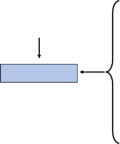
Users
Groups
Framework Application(s)
(4) Entity
(5) WorkFlow
(6) Data Slice
Figure 3.1
It is a combination of the first five application elements (six if securing User Defined Dimensions) that will grant the user the ability to do certain things or see certain cube data within an application.
For example, if you grant a user the ability to open or login to a particular application (e.g., the Open Application security role) but do not grant that user the remaining four application elements (cube, scenario, entity, and workflow), the user will be able to do nothing more than log in to the application.
If you grant that same user the ability to open the application and see certain application pages (e.g., the Spreadsheet page) but you have not granted that user any access to cubes, entities, or scenarios, the user will be able to log in and navigate to the Spreadsheet page, but see no data.
In almost all use cases when securing cube data, it is a combination of those five security elements that will control what a user can see and do within a single application. How you design these application elements will also control the look and feel of the end-user experience.
It is important to understand that, within those five key application elements, there is both object security and data security. It is the intersection of both a user’s object and cube data security that will determine their access within an application, as shown in Figure 3.2.
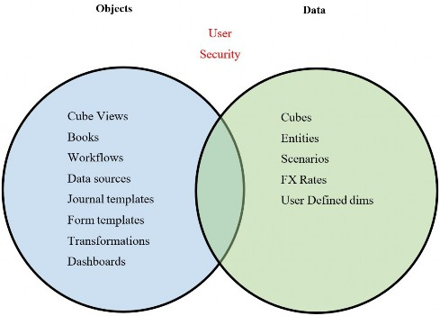
Figure 3.2
For example, you may have a report that everyone can access. That report (e.g., Cube View) is considered an application object.
When a user runs that report (the object), the data displayed to the user will be controlled by their cube, scenario, and entity (their data) security rights. You may have one report for an income statement by cost center (entity) as an example. When users run that report, they will only have the ability to see the cost center (entities) data to which they have been granted access.
So, one object (an income statement Cube View) can satisfy the reporting needs of an entire organization (cost centers) because users’ data security will control what information is displayed on that Cube View.
Relating this back to our home security analogy we started in Chapter 1, think about object security as the doors, fences, and windows to a home. You may have access to open certain doors, fences, and windows (objects), but you may not have further access, like keys to a safe or passwords to a computer (data).
OneStream object security includes the following:
Application roles and pages
Workflows
Cube Views
Business rules
Dashboards
Data management jobs
Data sources
Transformations
All of these elements are objects within a OneStream application and can be secured on their own. They are separate from the security that you apply to your data elements. Chapter 5 will go into all application security elements in more detail.
When we talk about OneStream data security, we are referring to:
Cubes
Entities
Scenarios
Data Slices
Why is it important to understand the difference between object security and cube data security?
Understanding the two different types of element security – and how they intersect – will help inform how simple or complex you make your data model.
You may choose to leave certain objects unlocked to Everyone, and rely upon your data security (cube, entity, scenario) to control what people can and cannot see. This is a simplified approach to your overall security: the ‘Less is More” approach.
Or you may choose to take a conservative approach where you not only limit a user’s cube data security but also limit their object security as well, leading to more complexity in setup and maintenance, but lower risk.
Think again about your home security. While you lock your exterior doors and windows, once inside your home you may take a more modest approach where not every door, drawer, or computer is individually locked. This makes moving around and living in your house easier, but it does come with some added risk. If someone were to break in and you have not locked all the drawers, safes, and laptops, you run the risk that those may be compromised.
But balancing that risk with ease of living is something each person decides for themselves, much in the same way your company will decide the right balance of control and maintenance. Which security approach you take will depend on your company’s risk tolerance, the sophistication of your user base, how you want their user experience to be within OneStream, your auditors, and so on.
Now that we understand that application security is comprised of both object-level security and data security, let’s take a look at the upfront questions you will want to ask as you design your security.
Design › Security Methodology
Design Questions
As we mentioned previously, OneStream security is flexible and does not limit or constrain your security approach. When faced with so much flexibility – the proverbial blank slate – how do you know where to begin your security design?
There are several important questions that need to be understood, either upfront or, if you are changing your security approach, during a later phase. Here is a list of potential (not exhaustive) questions that should be asked and understood to choose the right approach:
Who will be loading what data?
Is your load process centralized or distributed?
Will you load data via imports, or will you need manual inputs as well?
Who will be viewing what data?
Who will maintain data mappings?
Who will maintain what metadata?
Who will maintain reports?
Should certain reports only be available to certain users?
Will distinct groups be creating, approving, or posting JEs?
Will you have different review, confirmation, or certification levels?
Who can lock and unlock data?
Who can consolidate and calculate data?
Do you split responsibilities by process? (e.g., Actuals versus Budget)
Do you need to enforce segregation of duties among tasks?
Will you have various levels of administrators?
Do you want to secure data by entity and, if so, to what level (e.g., base entities, groups of entities, regional, etc.)?
Do you want to secure data by scenario?
Do you need security on any specific User Defined dimensions?
As you ask the above questions, the answers will start to form the basis for your security approach. A lot of times, companies think they can take a simple or modest approach to security, but in asking the above questions, it becomes clear they need more layers and checkpoints than they originally envisioned.
Keeping the full picture and all the answers above in mind, you can adopt a methodology to meet your company’s needs with the right balance of control and ease of maintenance.
Once you have gathered answers to key design questions and understand your company’s needs, you can move from design concepts to build. You are now ready to apply naming conventions and standards as you begin to build out your security. We will cover some best practice naming conventions in the next section.
Design › Security Methodology
Naming Conventions
If you have worked in an accounting or financial system, you will know that a common approach to naming conventions can make understanding, organizing, auditing, transferring knowledge, and maintaining everything infinitely easier.
I will lay out one approach to security group naming conventions in this section that I find easy to follow, but you can choose your own path. What is most important with any naming convention is not so much what you choose, but adhering to those rules. Be consistent!
Commonly, since a user needs access to a minimum of the first five application elements, it follows that our security group naming convention can also follow a five-tiered structure (as per Figure 3.3).
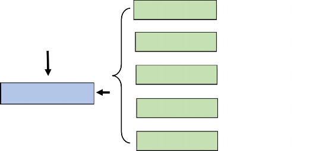
(1) Application
001_APP_
Users
(2) Cube
002_CUBE_
(3) Scenario
003_SCN_
Groups
(4) Entity
004_ENT_
000_GRP_
999_EXCL_(5) WorkFlow
005_WF_
Framework Application
Figure 3.3
Design › Security Methodology › Naming Conventions
User Group Names
As we learned in Chapter 2, users cannot be granted individual privileges. Users only obtain access by being placed into security groups. The reason to start user security groups with 000_GRP (and exclusion groups with 999_EXCL) is so that all user groups sort to the top of the screen on the System > Security tab.
Why is this important? By starting all user groups with 000 they will appear first, after the three native security groups of Everyone, Nobody, and Administrators. And because exclusion groups are rare, I like to start them with 999 so they sort to the bottom of the security group screen.
This makes it easier to add or remove users from security groups, as they will be arranged for easy access. This is shown in Figure 3.4:
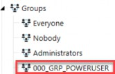
Figure 3.4
Design › Security Methodology › Naming Conventions
Object Group Names
Next, we can start the remaining security groups that pertain to both objects and cube data within an application with 001 to 005. These groups will then be nested in our 000 user groups. Because we know it takes a combination of at least one of each of those five security groups to achieve a complete security picture for a user group (000), you can easily scan a particular user group and notice if one of the five elements is missing.
For example, when we focus on a given 000_GRP_POWERUSER group, we should see at least one of each of the 001 to 005 groups in the Parent Groups box, as shown in Figure 3.5:
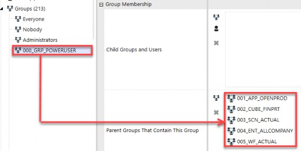
Figure 3.5
If this group had any element missing, for example if 000_GRP_POWERUSER did not have any 003_SCN security groups embedded, this user group would be missing a piece of access to complete rights to access a particular scenario of data. This assumes that you have not left the scenario group set to Everyone.
This brings us to our first rule of thumb, in that it takes at least one of each of the first five security groups (001 to 005 groups) to complete a user’s access (000). |
While a user in this group could log in (001_APP_OPENPROD), access a cube (002_CUBE_FINPRT), access all entities (004_ENT_ALLCOMPANY), and even navigate to an appropriate workflow (005_WF_ACTUAL) because the group is missing access to a particular scenario of data (003_SCN_ACTUAL) users in the group will still not be able to access data.
The only time this is not the case is if you have Everyone assigned to certain objects or data. Say you are taking a modest or simple approach to your security, and you leave all cubes open to Everyone. In that case, then no 002_CUBE group is required to be nested in your user group (000).
If it is the case that you leave an object – such as cube(s) – open to Everyone, then you can simply remove that from your numeric naming convention, as shown in Figure 3.6. Again, this can be the case if you are taking a simple approach to security.
(1) Application
001_APP_
Cube
(2) Scenario
002_SCN_
(3) Entity
003_ENT_
(4) WorkFlow
004_WF_
Everyone
Figure 3.6
(1) Application
001_APP_
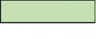
Cube
Everyone
(2) Entity
002_ENT_
Another example is if your company decides not to have scenario-specific security, and relies only upon entity and workflow security. For example, if you allow your users to see all data – whether that is Actual, Forecast, or Budget data for whatever entities to which they have access – you may assign the Everyone security group to all your scenarios. In that case, once again, you would not need any scenario-specific security groups (003_SCN) and thus could eliminate that 003 group from your numeric naming convention, as in Figure 3.7.
Scenario
(3) WorkFlow
003_WF_
Everyone
Figure 3.7
You can see that, once again, this is a simple approach where you are leaving cubes and scenarios open to Everyone and relying upon a user’s entity and workflow security to control what they can and cannot see or do in OneStream.
So, what happens if your organization decides it wants to secure scenarios and cubes after go-live or years later? As we mentioned, security is flexible and can be changed as an organization’s needs change. In that case, I would simply create 004_CUBE and 005_SCN security groups, assign them to appropriate objects, and nest them in your 000 user groups (and, of course, test the changes along the way). Remember, it is not so much that you follow the exact naming convention I have laid out above, but that you adhere to whatever naming convention you do establish!
For smaller organizations or those with less IT or regulatory oversight, leaving some objects open to Everyone may provide the right balance between ease of maintenance (e.g., you do not have to maintain cube or scenario-specific security groups) and risk (relying solely on entity and workflow security groups).
For more complex organizations or those companies with demanding IT or regulatory needs, leaving cubes and scenarios open to Everyone may prove too risky, and thus, they may want all five elements (001 to 005 security groups) as a part of their overall user security (000 groups).
The nice thing is that this numeric naming convention can suit both approaches. It is a flexible guide that can be applied and modified to meet each company’s individual security needs. It provides rules to follow that can be tailored to fit a simple or complex security model, as you can see in the above examples.
Design › Security Methodology › Naming Conventions
Nesting Groups
As we reviewed in Chapter 2, security groups can be embedded, aka nested, into other groups to create inherited rights between groups. Nesting security is a common OneStream practice to limit the number of security groups that get assigned to users, making it easier to audit, troubleshoot, and assign end-user security.
That brings us to our second rule of thumb with security groups. When nesting groups into each other, the data security groups for cube ( |
As we mentioned in the previous section, user groups should start with 000 and contain 001 to 005 nested groups (as desired) to achieve the goals of that user group. Then, users are placed into the 000 security groups.
Why is this rule of thumb true for the data security groups? Because cube groups (002) should only be attached to cubes, scenario groups (003) should only be attached to scenario properties, and entity groups (004) to entity properties, it follows that when you nest data groups into each other, you only want to do so within the same family of data. This is to prevent mixing apples and broccoli (different families) and then trying to understand why users can or cannot do something in an application.
Plain and simple, it makes it challenging to validate and audit your security if you cross-embed the data groups (003 in 004, 002 in 003, 002 in 004).
And why does this rule of thumb apply to the object security groups for application roles (001) and workflows (005)? Because the 001 groups pertain to specific individual application roles and pages, and the 005 groups pertain to specific individual workflows. If you commingle these object security groups, you lose transparency and flexibility in how each of these individual objects is secured.
The only exception to this rule is with your 000 user groups. The 000 groups themselves, by nature, are the final user groups into which you will place individuals. As such, your 000 groups should contain 001 to 005 groups.
Using the house analogy once again, you may have a single key that opens all exterior doors to your house, but you likely want different keys when it comes to opening bedroom doors inside your house. Using the same key on exterior doors as interior doors makes it hard to lock off certain parts inside your home.
Assume you have an entity group to grant full access to all entities called 004_ENT_ALLCOMPANY. One approach can be to embed all other 004 entity security groups in this group to create the correct inheritance for this parent. As I say, this is but one approach because, alternatively, you can use the Read Data Group and Read Data Group 2 to achieve this same thing without nesting. Remember, in OneStream, there are always multiple ways to achieve the same task!
In Figure 3.8, you can see we also inadvertently have an Actual scenario security group (003_SCN_ACTUAL) embedded in the 004_ENT_ALLCOMPANY entity security group. That will have unintended consequences as we have just created rights over the Actual scenario of data (apples) from an entity (broccoli) security group. If you have a user who should have access to all entities (004_ENT_ALLCOMPANY), but only for Budget data, by embedding a 003_SCN_ACTUAL into a 004_ENT group, you have broken your security model and granted unintended rights. Just remember that apples (003) and broccoli (004) just do not mix!
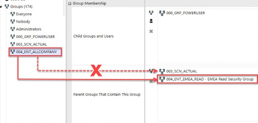
Figure 3.8
Using a number standard for security groups will make it easier to spot if data groups have been embedded into other dissimilar groups (as shown in Figure 3.8).
While we may want to grant permission to everyone to view all company data and also enable access to view Actuals, we do so by combining those two individual groups into a 000 user group, not by cross-embedding groups from different application data elements into each other.
The correct way to grant people access to all entities and the Actual scenario would be by combining those two data groups into a user security 000 group, as shown in Figure 3.9.
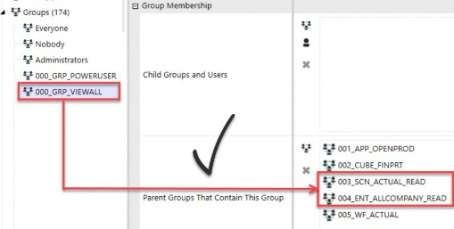
Figure 3.9
Next, let’s walk through a couple of examples involving the object groups for application roles and pages (001) and workflows (005), to understand why we want to avoid embedding these groups into themselves.
Take, for example, the Manage Cube Views and Cube Views Page application elements (covered in more detail in Chapter 5). While you may want to grant certain users the ability to manage Cube Views, you may want to give other users the ability to see the Cube Views page but not modify Cube Views.
If you create one security group (001_APP_CUBEVIEWS) and attach it to both the Manage Cube Views and Cube Views Page application elements, you have lost the ability to segment those who can manage Cube Views from those who can merely access the Cube Views page.
Or if you create two security groups (001_APP_MANAGECUBEVIEWS and 001_APP_CUBEVIEWSPAGE) and nest one into the other, again you have commingled rights and made it hard to separate who can do what in relation to application roles and pages. Chapter 5 will go into more detail around application roles and application pages.
The same rule applies to workflow security groups. Say you have a workflow group for those who can access Actuals (005_WF_ACTUAL) and another group for those who can access Budget (005_WF_BUDGET). If you nest the Budget group in the Parent Groups of the Actual workflow group, you have now created unintended rights between two different Workflow Profiles. This is shown in Figure 3.10.
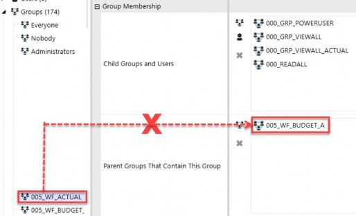
Figure 3.10
Now, any user who has access to Actual workflows assigned with 005_WF_ACTUAL will also have access rights to Budget workflows with 005_WF_BUDGET. The problem with embedding these two workflows into each other is that you may not want to grant all Actual workflow users access to Budget workflows. However, by nesting – as shown in Figure 3.10 – this is the unintended consequence.
If you have a person who needs access to both the Actual (005_WF_ACTUAL) and Budget (005_WF_BUDGET) workflows, you will do so again by combining those two groups in a user group as per Figure 3.11. In this way, you have flexibility, control, transparency, and auditability over which users can access which workflows, based upon the user group (000) and not due to inadvertent cross-nesting.
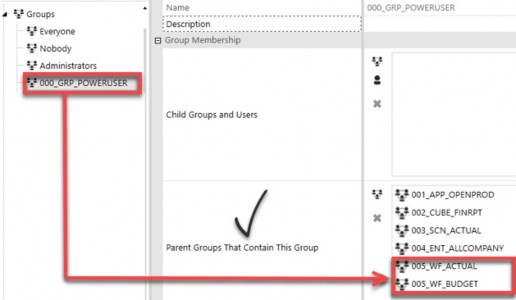
Figure 3.11
That is why the rule of thumb is not to nest 001 groups into other 001 groups and 005 groups into other 005 groups. Because application roles and pages (001) and workflows (005) are very specific to those objects, and to have flexibility in how you grant that access, you will not want to cross-embed them. Chapter 5 will go into more detail around the application roles and pages, as well as workflows. In this chapter, we are just laying the rules groundwork for how to embed (or not) various security groups.
Design › Security Methodology › Naming Conventions
Group Name Recap
So, to recap our general rules, 000 security groups should contain at least one 001, 002, 003, 004, and 005 security group in their Parent Groups box to complete the security picture for a user (unless Everyone is being leveraged).
002 should only contain other 002, 003 only other 003, and 004 only other 004 groups to avoid complicating nested groups and granting rights across different sets of data.
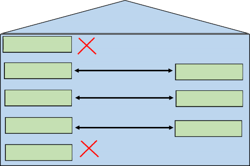
(1) Application
(2) Cube
(2) Cube
(3) Scenario
(3) Scenario
(4) Entity
(4) Entity
(5) WorkFlow
User Groups
And lastly, 001 application and 005 workflow groups should never be nested, as they pertain to specific objects.
Figure 3.12
Remember that these are general rules or guidelines to be followed, but there can always be exceptions to these rules or modifications to them to meet each company’s individual needs.
I have laid out one approach to naming conventions and rules of thumb that I think are easy to follow, audit, test, and maintain. Whatever method you choose, following it and documenting exceptions will be key!
Design › Security Methodology › Naming Conventions
Optional Group Names
In addition to the first five groups that we have already discussed, you may optionally have security groups for data slice security (006), as well as Solution Exchange tools (007) and other (008) tools or needs. These optional security groups should also follow a numeric naming convention so they can be easily applied.
Slice security (006) is a very granular level of security that can be applied – most commonly – to UDs but also accounts, if needed. And Solution Exchange security groups (007) are groups that you will place around the dashboards that come with those solutions. We will cover both in more detail in Chapter 7.
Finally, 008 security groups are intended to capture any other miscellaneous items that you may want to secure in your application.
(6) Data Slice
006_UD#_
The number is not as important for any remaining elements, so long as you follow a convention. By establishing a standard naming convention (as in Figure 3.13) and following it, it will once again make implementation, testing, and ongoing maintenance more efficient.
(7) Solution Exchange 007_RCM_
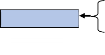
Groups
000_GRP_
999_EXCL_(8) Other
008_CV_
Figure 3.13
Design › Security Methodology
Types of Access
Now that we have covered naming conventions for the key elements within an application, let’s dive deeper and talk about the different ways in which you can secure those elements.
All elements in OneStream (whether an object or a data element) have one or more of the following security accesses associated with them:
Access: Allows view access
Calculate: Allows running scenario calculations
Certify: Allows workflow certification
Display: Allows an object to be seen without data
Execute: Allows workflow execution of steps
Journal Create (Process): Allows creation of journals
Journal Approve: Allows approval of journals
Journal Post: Allows posting of journals
Maintain: Allows maintenance
Manage: Allows scenario data management jobs
Read: Allows view access to entities or scenarios
Write: Allows write access to entities or scenarios
Design › Security Methodology › Types of Access
Access Naming Conventions
Depending upon which element you are securing, different security access options apply. Figure 3.14 shows the list along with related suffix naming conventions:
| Element | Type of Access | Examples |
|---|---|---|
001_APP_ 001_SYS_ | Access | Application Roles and Pages System Roles and Pages |
| 002_CUBE_ | _Access _Maintain | Cube 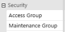 |
| 003_SCN_ | _Read _Write _Calculate _Manage | Scenarios 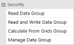 |
| 004_ENT_ | _Display _Read _Write | Entities 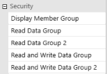 |
| 005_WF_ | _Access _Maintain _Execute _Certify _Journal Create (Process) _Journal Approve _Journal Post | Workflows 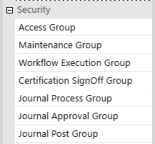 |
008_ACC_ 008_FLW_ 008_UD#_ | _Display | Accounts, Flow, UDs 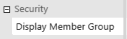 |
Figure 3.14
This type of access is the final piece of information needed to complete the security group naming conventions we started in the prior section. I prefer to add this access type as a suffix to the security group names.
For example, assume you want to create a security group for Germany Read (e.g., can view Germany data) users and then an additional group for Germany Write (e.g., can load Actuals, prepare Budget, or Forecast) users. When doing so, you would set up the following two security groups:
004_ENT_DE_READ004_ENT_DE_WRITE
You would then assign the 004_ENT_DE_READ security group to all Germany entities as the Read Data Group entity property. Likewise, you would assign the 004_ENT_DE_WRITE security group as the Read and Write Data Group for those same entities. Notice that the ending suffix determines the type of access to an object; again, the final piece to complete security group naming conventions.
To demonstrate another example of using these suffixes to define the type of access, let’s take the case of a corporate Workflow Profile. That Workflow Profile has an access, maintenance, execution, and certification security group assignment.
As such, there are security groups created for each of those types of access that all start with 005_WF_CORP and then – depending upon the type of access they are suffixed with – A, _M, _E, and _C to differentiate the workflow access. This is shown in Figure 3.15 below.
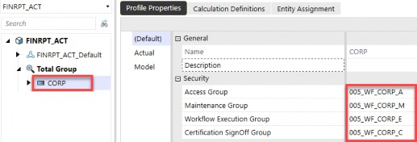
Figure 3.15
Now that we have a solid foundation in naming security groups using prefixes to denote the element and suffixes to denote the type of access, we will go over some common examples of types of security roles in the next chapter, and how their related security group access is established accordingly.